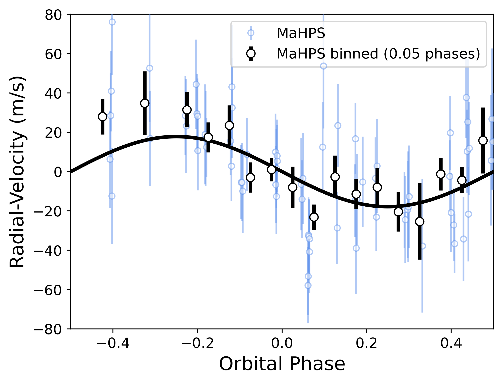

Research
My work focuses on two main topics: detecting new exoplanets with precision radial velocities and understanding the formation and evolution of sub-Saturns.
Exoplanet Detection with MaHPS at Wendelstein
A central pillar of my PhD has been using the Manfred Hirt Planet finder Spectrograph (MaHPS), a fibre-fed échelle spectrograph mounted on the 2.1 m Fraunhofer telescope at the Wendelstein Observatory in the Bavarian Alps. MaHPS delivers radial-velocity precision at the few-m/s level, making it a powerful tool for confirming transiting planet candidates from missions such as TESS and for carrying out independent Doppler surveys of carefully selected stellar samples.
One of our primary targets has been the open cluster M 67, one of the closest solar-age, solar-metallicity clusters. By surveying cluster members we can study giant-planet occurrence in an environment where stellar ages, compositions, and dynamical histories are well constrained. Our survey revealed an elevated hot-Jupiter occurrence rate in M 67 compared to the field, along with the discovery of S1429 b, a warm Jupiter on a moderately eccentric orbit. Paper I ↗

Beyond cluster surveys, MaHPS has played a key role in the mass characterisation of TESS planet candidates. In a follow-up campaign we confirmed TOI-2147 b and TOI-6019 b, two warm Jupiters on notably eccentric orbits. Their orbital properties — moderate periods combined with eccentricities of ~0.4–0.5 — are consistent with high-eccentricity migration, where gravitational interactions with an outer companion excite the eccentricity before tidal dissipation circularises the orbit. These systems add to a growing sample of warm Jupiters that may be caught in the act of migrating inward. Paper II ↗
Formation and Evolution of Sub-Saturns
Sub-Saturns — planets with radii of roughly 4–8 R⊕ — occupy a fascinating and poorly understood region of parameter space. Too large to be explained by rocky cores with thin atmospheres alone, yet too small to have undergone the runaway gas accretion that builds Jupiter-mass envelopes, they challenge conventional models of giant planet formation. A major thread of my research asks: are sub-Saturns a coherent population, or do they comprise distinct sub-groups shaped by different physical processes?
As part of the TESS follow-up effort I contributed to the discovery and characterisation of TOI-5108 b and TOI-5786 b, two sub-Saturns located near the upper edge of the Neptune desert — the observed deficit of intermediate-mass planets on short-period orbits. Their positions in the mass–period plane place them in a transitional zone between the desert, the recently identified savanna of longer-period sub-Saturns, and the narrow ridge of surviving short-period planets, providing valuable test cases for photoevaporation and migration models. Paper III ↗
To move beyond individual discoveries I carried out a population-level analysis of 28 sub-Saturns with well-measured masses and radii, deriving their envelope mass fractions (fenv). The resulting distribution is strikingly bimodal: one group clusters at low envelope fractions (~5–15%), while a second peaks at much higher values (~40–60%). The gap between them aligns with the theoretical threshold for runaway gas accretion, suggesting that sub-Saturns below this threshold are planets whose growth stalled, while those above it narrowly avoided becoming gas giants. A complementary radius-bin analysis at 6 R⊕ supports this interpretation, with the smaller (4–6 R⊕) and larger (6–8 R⊕) sub-groups showing distinct structural properties. Paper IV ↗
Most recently, I have been investigating the companion architecture of sub-Saturn systems. Using RV injection-recovery tests across 68 systems I measured completeness-corrected companion rates and found that multiplicity patterns trace the Neptune-desert landscape: nearby-planet rates climb from ~0% in the desert through ~8% on the ridge to ~50% in the savanna, closely mirroring the companion rates of hot and warm Jupiters at the respective boundaries. A metallicity–multiplicity correlation further suggests that the giant-like (6–8 R⊕) sub-Saturns share formation channels with gas giants.